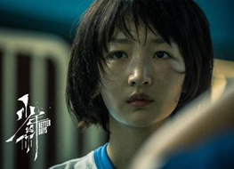

《芳华》
导演：冯小刚
主演：黄轩、苗苗、钟楚曦
“世上有朵美丽的花，那是青春吐芳华，铮铮硬骨绽花开，沥沥鲜血染红它”。该影片以1970至1980年代为背景，
讲述了在充满理想和激情的军队文工团，一群正值芳华的青春少年，经历着成长中的爱情萌发与充斥着变数的人生命运故事。

《少年的你》
导演：曾国祥
主演：周冬雨、易烊千玺
该片讲述在高考前夕，被一场校园意外改变命运的两个少年，如何守护彼此成为想成为的成年人的故事。该片将青春片与
现实主义题材结合，聚焦高考、家庭教育等社会话题热点，直面校园霸凌问题，努力引发观众的关注与思考：如何避免这样的事情发生，保护少年？

《怦然心动》
导演：罗伯·莱纳
主演：玛德琳·卡罗尔、卡兰·麦克奥利菲
该片描述了青春期中男孩女孩之间的有趣互动，很好地表现了青春期男孩女孩的成长与自省意识。“有人住高楼，有人在深沟，
有人光万丈，有人一身锈，世人万千种，浮云莫去求，斯人若彩虹，遇上方知有。”
《当幸福来敲门》
导演：加布里尔·穆奇诺
主演：威尔·史密斯、贾登·史密斯、桑迪·牛顿
影片讲述了一位濒临破产、老婆离家的落魄业务员，如何刻苦耐劳的善尽单亲责任，奋发向上成为股市交易员，最后成为知名
的金融投资家的励志故事。幸福并不是在遥远的地方等着我们，而是要靠奋斗争取的。
《霸王别姬》
导演：陈凯歌
主演：张国荣、巩俐、张丰毅
影片围绕两位京剧伶人半个世纪的悲欢离合，展现了对传统文化、人的生存状态及人性的思考与领悟。令我印象最为深刻的
是张国荣的演绎，他以形神兼备的演出，将程蝶衣这个“不疯魔不成活”的角色演绎得活灵活现。

《七月与安生》
导演：曾国祥
主演：周冬雨、马思纯
该片讲述七月和安生两个女孩从13岁开始相识相知、相爱相杀的成长故事。剧本在情节和细节上做“加法”，用真实和真诚
去讲述青春、爱情、友情和宿命。电影情感细腻，画面美，人物形象丰满，值得一看。
《82年生的金智英》
导演：金度英
主演：郑裕美、孔刘
该片以1982年出生、过着最普通生活的女性金智英的视角向观众传达女权主义。影片的整体气氛温馨，但通过描绘金智英
的日常生活和种种心理疾病的细节，向观众指出了很多韩国民众一直认为女性理所当然应该承受的事情，直击“男人的痛点和女人的泪点”。
《唐人街探案》
导演：陈思诚
主演：王宝强、刘昊然
该片讲述了唐仁、秦风必须在躲避警察追捕、匪帮追杀、黑帮围剿的同时，在短短七天内，完成找到失落的黄金、查明真凶、
为自己洗清罪名的任务。电影将满满的搞笑和严谨的逻辑以及内核坚实的侦探推理完美结合，让人们在欢乐中思考解密，在情节发展中感受真情实意，
在犯罪的阴影下反思善与恶的辩证关系。

《飞驰人生》
导演：韩寒
主演：沈腾、黄景瑜、尹正、尹昉
该片讲述了一个曾经叱咤赛车界的炒饭摊老板，试图重返车坛，却频频遭现实打脸的故事。电影的世界观是高级又朴素的，
它鼓励人们找到心中最大的热情所在，不管是否能够成功都不放弃。36岁的韩寒拍出中年人失意之后的坚持本心，而且故事一气呵成非常轻松、
毫无累赘，很是难得。
《百鸟朝凤》
导演：吴天明
主演：陶泽如、郑伟、李岷城
该片讲述了德高望重的唢呐老艺人焦三爷带领徒弟们用执着的热情与坚定的信仰追求和传承唢呐精神的故事。
该片从表层看是写的吹唢呐，但从深层看，表现的是对中华民族对优秀传统文化应持有的正确态度，弘扬的是难能可贵的匠人精神。